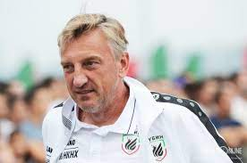

.png)
Медийную футбольную лигу в 2022 году создал бизнесмен Николай Осипов

В первом сезоне лиги, длившемся с апреля по июль 2022 года, принялиучастие 2DROTS, ЛФК «Рома», Starmix, «На Спорте», «Матч ТВ», Basement, FC Art, SD Family, Reality и Broke Boys. В финале, который прошёл 10 июля на «ВТБ Арене», в присутствии 11 тысяч зрителей, 2DROTS обыграли Basement со счётом 4:0 и стали обладателями приза в 5 миллионов рублей. После этого врио президента РПЛ Александр Алаев заявил, что победитель лиги может получить право участвовать в розыгрыше Кубка России.
.png)
В ходе второго сезона он сообщил, что будет построен собственный стадион с оранжевым газоном.В феврале 2023 года издание «Спорт-Экспресс» включило Николая Осипова на 19 место в топе «30 самых влиятельных людей российского футбола». В том же месяце лига создала свою сборную, главным тренером которой стал Дмитрий Кузнецов.
24 марта прошёл первый товарищеский матч сборной против «Крыльев Советов». Футбольный клуб из Самары победил сборную со счётом 4:0. Вырученные деньги с билетов уйдут на лечение Никиты Finito Куриленко из «Амкала», у которого был диагнастирован лейкоз.
Во втором сезоне МФЛ команды были поделены на 2 группы: в группу «A» вошли Reality, «Рома», «Амкал», «На Спорте», «Бей Беги», Tamo Junto, «Родина Медиа», ФК «10» и Broke Boys; в группу «B» — ФК «Деньги», Watch TV (бывший «Матч ТВ»), Goats, SD Family, МФК «Рубин» (медиакоманда под эгидой ФК «Рубин»), 2DROTS, «Эгриси», Fight Nights и «Наши парни» (клуб от РФС).
Деньги» и Goats попали на МФЛ через голосование среди болельщиков на портале Sports.ru. В виде спонсорских контрактов с лигой и командами второй сезон МФЛ был профинансирован букмекерскими компаниями на сумму около 250 млн рублей. Титульным спонсором стала компания Winline

5-й тур прошёл по экспериментальным правилам: удаляющая на 7 минут оранжевая карточка, чистое время — 25 минут в каждом тайме и другие. Первым сыгранным матчем по уникальным правилам стал «Бей Беги» — Tamo Junto (1:2), в котором бразильцы забили гол красным мячом (считающимся за два и ставшим победным) и получили первую оранжевую карточку. После тура Осипов объявил о том, что некоторые правила продолжат действовать до конца турнира. На стадии плей-офф осталось правило чистого времени.